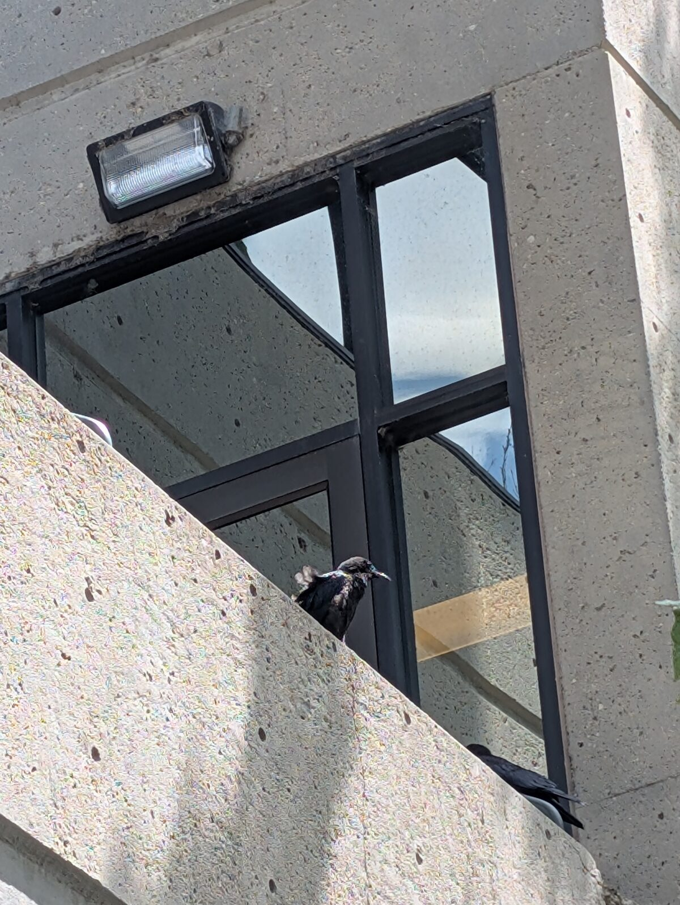
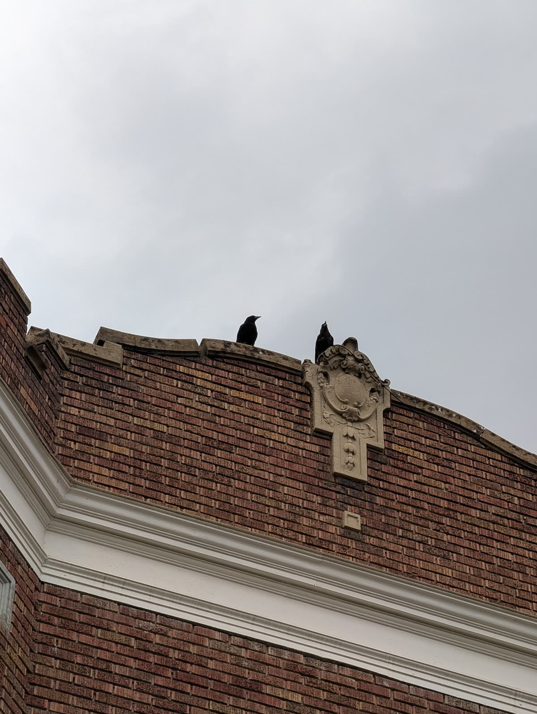
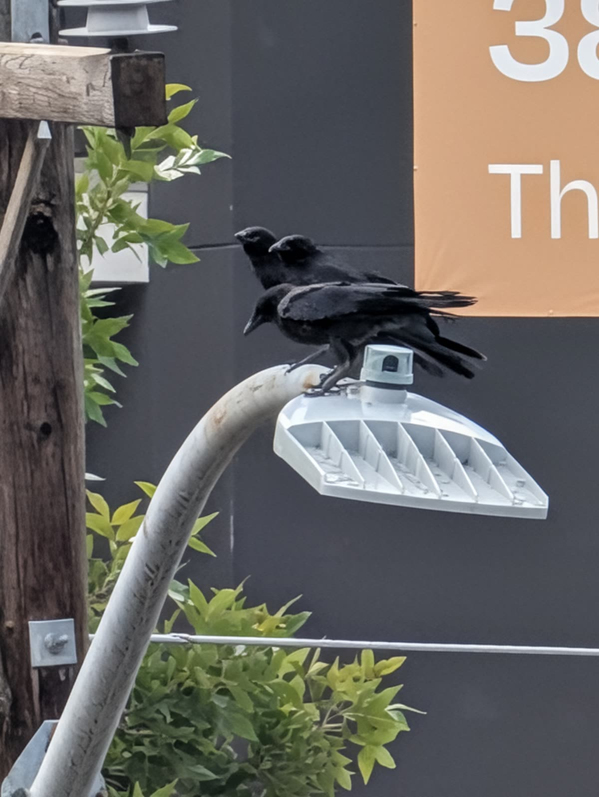

The murder in question
The crows I feed are five: Thrasher and Ripjaw the parents, Killer and Shredder the fledglings, and Edgar, a yearling who stayed on to help guard the brood. The notes I was already keeping on them turned out to be exactly the data this needed: what a crow said, together with what was happening when it said it.







Killer calls back when I say “bye buddies.” That is not a result. It is why I started.
What gave me the idea
Two projects convinced me this was worth attempting at all. Neither is mine, and both are further along than anything here.
-
Carrion crows, biologgers, and 150,000 calls
Vittorio Baglione and Daniela Canestrari at the University of León, with the Earth Species Project, put tiny recorders on wild carrion crows in northern Spain and mapped the repertoire of 24 family groups against what the birds were actually doing. Those crows are cooperative breeders: the young stay home for years and help raise their siblings, which is exactly what Edgar is doing on the roof here. It is the same question as this project, asked with instruments. The preprint.
-
Project CETI
The Cetacean Translation Initiative is doing this for sperm whales: tags, buoys and drones feeding machine learning, with the stated aim of a blueprint for another species' language. They have proposed a phonetic alphabet for whale codas. If it can be attempted at that scale in the open ocean, it can be attempted in a backyard.
Where next
Have corvids nearby? Ask for the field app, or read how to collaborate.